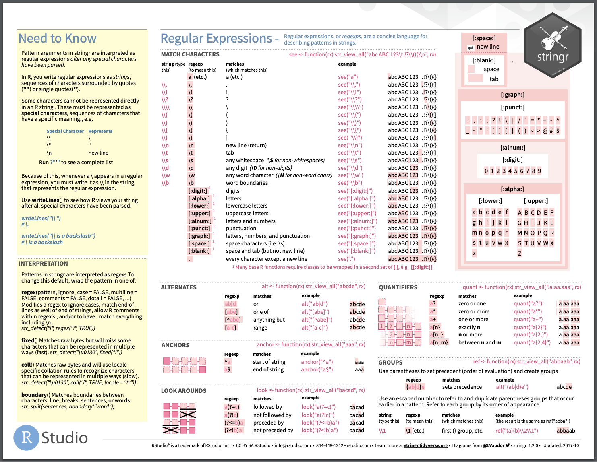

text <- readtext::readtext("data/sse_seed_inventory_04.txt")[,2]Working with text
Set-up
First things first, let’s make sure we have all of our text data in. We can go ahead and read it in from GitHub.
Let’s also make sure that we have our main package installed and loaded: the stringr package.
#install.packages('stringr')
library(stringr)Exploring text data
Let’s start by taking a look at our data to understand what it is we’re starting with. We’ve got a character string that only has a length of 1 – it is not yet broken up – but it is long. It has 186 thousand characters.
typeof(text)[1] "character"length(text)[1] 1nchar(text)[1] 185723Now, there are other base R ways of exploring text data, but we are going to focus on the stringr package and the functionality it offers. I’m a big fan on the stringr cheat sheet and rely on it almost every time I work with text. I like this package because, in addition to the useful cheat sheet, it has intuitive function names that can let you explore strings. For example, can I detect the word ‘kale’ anywhere in this string?
str_detect(text, 'kale')[1] TRUEOkay, great. How many times?
str_count(text, 'kale')[1] 140140 mentions of kale, excellent. But where?
str_locate(text, 'kale') start end
[1,] 642 645This is an identification of location using character numbers. We can confirm that by pulling out those character number numbers as ‘sub-strings’:
str_sub(text, 642, 645)[1] "kale"But there are supposed to be 140 of these. I want all of their location.
str_locate_all(text, 'kale')[[1]]
start end
[1,] 642 645
[2,] 1293 1296
[3,] 1952 1955
[4,] 3550 3553
[5,] 4364 4367
[6,] 5158 5161
[7,] 5991 5994
[8,] 7197 7200
[9,] 8741 8744
[10,] 13180 13183
[11,] 13943 13946
[12,] 14890 14893
[13,] 16933 16936
[14,] 19051 19054
[15,] 20097 20100
[16,] 20916 20919
[17,] 21645 21648
[18,] 23705 23708
[19,] 24753 24756
[20,] 25345 25348
[21,] 26141 26144
[22,] 26796 26799
[23,] 27574 27577
[24,] 28560 28563
[25,] 29848 29851
[26,] 30989 30992
[27,] 32656 32659
[28,] 33609 33612
[29,] 35838 35841
[30,] 37232 37235
[31,] 38105 38108
[32,] 42464 42467
[33,] 43390 43393
[34,] 44913 44916
[35,] 45879 45882
[36,] 48068 48071
[37,] 49747 49750
[38,] 51896 51899
[39,] 54870 54873
[40,] 55690 55693
[41,] 58730 58733
[42,] 60115 60118
[43,] 61349 61352
[44,] 63600 63603
[45,] 64492 64495
[46,] 66061 66064
[47,] 67087 67090
[48,] 68057 68060
[49,] 69287 69290
[50,] 70083 70086
[51,] 71169 71172
[52,] 72453 72456
[53,] 73728 73731
[54,] 74338 74341
[55,] 76126 76129
[56,] 77176 77179
[57,] 78111 78114
[58,] 79127 79130
[59,] 80344 80347
[60,] 81310 81313
[61,] 82651 82654
[62,] 83407 83410
[63,] 84373 84376
[64,] 85764 85767
[65,] 87261 87264
[66,] 88991 88994
[67,] 89804 89807
[68,] 90696 90699
[69,] 92601 92604
[70,] 93432 93435
[71,] 95678 95681
[72,] 96775 96778
[73,] 97656 97659
[74,] 99018 99021
[75,] 99768 99771
[76,] 101719 101722
[77,] 104010 104013
[78,] 105083 105086
[79,] 107242 107245
[80,] 108319 108322
[81,] 109102 109105
[82,] 109959 109962
[83,] 110759 110762
[84,] 111497 111500
[85,] 113227 113230
[86,] 114271 114274
[87,] 117070 117073
[88,] 118504 118507
[89,] 120008 120011
[90,] 121229 121232
[91,] 122781 122784
[92,] 124346 124349
[93,] 126711 126714
[94,] 127737 127740
[95,] 128508 128511
[96,] 129612 129615
[97,] 131206 131209
[98,] 132070 132073
[99,] 132967 132970
[100,] 134240 134243
[101,] 135875 135878
[102,] 137392 137395
[103,] 138474 138477
[104,] 139573 139576
[105,] 140383 140386
[106,] 141792 141795
[107,] 142905 142908
[108,] 143877 143880
[109,] 144639 144642
[110,] 145541 145544
[111,] 146598 146601
[112,] 147068 147071
[113,] 148788 148791
[114,] 149680 149683
[115,] 151815 151818
[116,] 152647 152650
[117,] 153246 153249
[118,] 154323 154326
[119,] 155364 155367
[120,] 156140 156143
[121,] 157822 157825
[122,] 158423 158426
[123,] 159449 159452
[124,] 161266 161269
[125,] 162559 162562
[126,] 163278 163281
[127,] 164602 164605
[128,] 165537 165540
[129,] 166343 166346
[130,] 169743 169746
[131,] 170555 170558
[132,] 171479 171482
[133,] 174895 174898
[134,] 176108 176111
[135,] 178183 178186
[136,] 179836 179839
[137,] 180980 180983
[138,] 182393 182396
[139,] 183758 183761
[140,] 184981 184984So, stringr is fairly intuitive and fun, but to get more serious with text we are going to layer on two components: 1) pattern detection with regular expressions (regex) and 2) using ‘dictionaries’ to parse apart long strings.
Pattern detection with regex
Let’s start by taking a look at any of the stringr functions’ help file an cue into what it describes for the pattern argument.
?str_locateFor the pattern argument, we see this description: “The default interpretation is a regular expression, as described in vignette(”regular-expressions”).” We can take a look at that vignette, which defines: Regular expressions are a concise and flexible tool for describing patterns in strings
What does this mean? I personally love the second page the stringr cheat sheet for guidance on this.
knitr::include_graphics("img/stringr_cheatsheet.png")
And to make it tangible, let’s first use a fun, short character string to understand these various features.
veg <- "kale, tomato, Kale, pepper, Artichoke, pea$, peppers, tomato"Alternates
First, let’s try to kind the locations of all the kale.
str_locate_all(veg, "kale")[[1]]
start end
[1,] 1 4Close, but it only gives me one of the kale locations. Why? String patterns are case sensitive. So, one way of detecing both is to write out our pattern using the ‘or’ symbol |.
str_locate_all(veg, "kale|Kale")[[1]]
start end
[1,] 1 4
[2,] 15 18But this isn’t very efficient because we are trying each pattern rather than using regex to generalize. So instead, we could give it alternates using square brackets to indicate that the ‘k’ can be either upper or lower case.
str_locate_all(veg, "[Kk]ale")[[1]]
start end
[1,] 1 4
[2,] 15 18Quantifiers
Next, let’s locate peppers.
str_locate_all(veg, "peppers")[[1]]
start end
[1,] 46 52The thing is, we have one ‘pepper’, and one ‘peppers’. Again, we could use the or symbol to specify both, but that is inefficient. So another way to identify both is by using a quantifier to suggest that there may be one or more ‘s’ appended to ‘pepper’. The ? quantifier suggests that there might be zero or one of the characters immediately preceding it. Now it can locate ‘pepper’ and/or ‘peppers’ because the pattern identifiers that were might be zero ‘s’s or one ’s’ attached to ‘peppers’. Bothb match the pattern.
str_locate_all(veg, "peppers?")[[1]]
start end
[1,] 21 26
[2,] 46 52Look arounds and anchors
What if instead of grabbing all of the identical patterns, I wanted just some particular match of a pattern, for example, just the first ‘tomato’. Right now, there are identical objects in our string so the pattern matches both.
str_locate_all(veg, 'tomato')[[1]]
start end
[1,] 7 12
[2,] 55 60Of course we could index from the str_locate_all function, but let’s do it with regex instead. We can use look arounds to get specific. What if we want the ‘tomato’ pattern only if its followed by the pattern ‘, Kale’? We can use the look around to specify where tomato is in relation to other patterns.
str_locate_all(veg, 'tomato(?=, Kale)')[[1]]
start end
[1,] 7 12On the flip side, what if we just just wanted the word tomato if it is at the end of the string? We can use an anchor to specify that the pattern needs to be the last thing in the string.
str_locate_all(veg, 'tomato$')[[1]]
start end
[1,] 55 60Playing with regular expressions and all their functionality will help you figure out what tools can be used for what tasks.
Escaping special characters
Sometimes we want to use special characters for good and other times we want the literal character in our pattern. For instances, what if I want regex to find the word ‘peas’ spelled with a dollar sign ‘pea$’. Because $ is a special symbol in regex (remember, it is an anchor suggesting that in this pattern, pea is at the end of the string), stringr can’t find it at first.
str_locate(veg, "pea$") start end
[1,] NA NAIf you want regex to detect the symbol, rather than interpret the regex meaning of the symbol, you can escape it with two backslashes:
str_locate(veg, "pea\\$") start end
[1,] 40 43It is important to know what needs escaped, so have a good look at the cheat sheet! Generally, most punctuation should be escaped, and it doesn’t hurt to escape something that doesn’t need escaped (because slashes need escaped too, which can get a bit messy).
The power of a dictionary
Now that we have a sense of regular expressions, we can return to our text strong. Because where things really get interesting is if you have a dictionary that you can use to match to and extract based on. For instance, if we take at look at our data, we have all of these seed companies and associated data – where they’re from, what they sell, how to contact them, etc. What we need to turn this into a nice clean data set is a key or dictionary to reference as a pattern for separating our text and pulling out uniform information.
Let’s start with a key piece of information that can help us: a dictionary of company IDs. This is data I had to request from the catalog (though I could have made it by hand, many dictionaries are, or extracted it some other way). Let’s read in this data frame of IDs:
ids <- read.csv('data/ids_04.csv')Extracting matches
With these we can try to understand how the IDs match to the test in the catalog. One good function to start with is the str_extract_all() function, which can help us understand – are all of these IDs in the text? How many times?
ids_matched <- str_extract_all(text, ids$vendorid)The extract functions output a list, and what we see here is that some of the patterns have been detected multiple times.
head(ids_matched)[[1]]
[1] "Red2"
[[2]]
[1] "MI12"
[[3]]
[1] "Ri12"
[[4]]
[1] "Se7"
[[5]]
[1] "Na2"
[[6]]
[1] "Bou" "Bou" "Bou" "Bou"which(lengths(ids_matched) > 1) [1] 6 10 15 19 22 24 26 32 33 37 39 42 44 47 48 49 56 57 59
[20] 62 63 67 82 89 102 108 122 126 131 141 146 148 149 157 161 163 168 173
[39] 176 179 191 195 203 204 226 239 249 262 264 280 285 289 304 305 306 310 341
[58] 348These repeates are likely because these patterns are both IDs and they exist in other words, like “Bounty” or “Boundary” that might come up also in this text. To overcome this, remember that regex has several special matching characters. For instance, we could tell regex that we want these patterns to be detected with word boundaries – meaning that are not housed within other words. Word boundaries are denoted by the \\b characters, which we can paste around our IDs.
ids$vendorid_bounded <- paste0("\\b", ids$vendorid, "\\b")
head(ids$vendorid_bounded)[1] "\\bRed2\\b" "\\bMI12\\b" "\\bRi12\\b" "\\bSe7\\b" "\\bNa2\\b"
[6] "\\bBou\\b" Now let’s try again.
ids_matched <- str_extract_all(text, ids$vendorid_bounded)
which(lengths(ids_matched) > 1)[1] 149 168 191Now we have much fewer repeats. Andwhat’s left are the IDs that match stand-alone words (mostly), and so this seems more reasonable to make the pattern more exact for these few cases.
ids$vendorid_bounded[ids$vendorid_bounded == "\\bMay\\b"] <- "May Earl May Seed"
ids$vendorid_bounded[ids$vendorid_bounded == "\\bAll\\b"] <- "All Allen"
ids$vendorid_bounded[ids$vendorid_bounded == "\\bLOC\\b"] <- "LOC Lockhart Seeds"Now if we try again we can see we have no repeats.
ids_matched <- str_extract_all(text, ids$vendorid_bounded)
which(lengths(ids_matched) > 1)integer(0)Now that there are no multiple matches, we can bind this list into a data.frame. Note that we only have 260 IDs in the text compared to the 351 ids we read in, but that is an issue for another time.
ids_df <- data.frame("id" = do.call('rbind', ids_matched))Splitting text by IDs
For now, let’s say we have 260 identifiable vendors in our text. Now we want to split our giant string by these IDs. We know that the catalog is indexed in alphabetical order according to the ids, so let’s first get ourselves set up so that our IDs are also alphabetical.
ids_df$id <- sort(ids_df$id)Now the hard part. We want to split apart the text each ID, and keep the text in between as our metadata. If we do this with the vector of IDs, we don’t get very far.
text_split <- str_split(text, ids_df$id)If we open this up we see that each item in the list starts at the beginning, with the first pattern. This is because we aren’t feeding str_split a pattern. Right now ids_df$id is a vector. Note: we were allowed to give str_extract_all a vector earlier because the _all element of that function vectorizes across the pattern (I think?).
So to make this a pattern, we once again want each ID to be recognized as its own unique pattern, so let’s again wrap these with word boundaries and this time, collapse them with the | or symbol.
ids_bounded_pattern <- paste(ids_df$id, collapse = "\\b|\\b")
ids_bounded_pattern <- paste0('\\b', ids_bounded_pattern, '\\b')
str_sub(ids_bounded_pattern, 1,48)[1] "\\bAb2\\b|\\bABB\\b|\\bAda\\b|\\bAG7\\b|\\bAL25\\b|\\bAL6\\b"Now we can split the string based on this pattern of IDs that are surrounded by word boundaries, separated using the or symbol.
text_split <- str_split(text, ids_bounded_pattern)Now, let’s check out this object.
lengths(text_split)[1] 261text_split[[1]][1][1] ""text_split[[1]][2][1] " Abbe Hills Seed, L. J. Krouse, 825 Abbe Hills Road,\nMt. Vernon, IA 52314. Phone: 319-895-6924. E-mail:\nIkrouse@cornellcollege.edu. Send SASE for information letter. Sells one variety of Reid's Yellow Dent-type open-pollinated untreated com in one-bushel bags, for livestock feed or silage. Retail and wholesale. Offered 1 corn variety in 2004.\n\n"text_split[[1]][3][1] " Abbott and Cobb, Inc., PO Box 307, Feasterville, PA\n19053-0307. Phone: 215-245-6666. Web Site: www.acseed com. Strictly wholesale. Specializes in sweet com, water-melon, peppers and squash. Offered 55 non-hybrid vegetable varieties in 2004 including: 2 beet, 2 collard, 2 com, 2 cress, 2 kale, 2 melon, 1 mustard greens, 1 okra, 1 onion other, 3 parsley, 4 pepper, 2 radish, I rutabaga, 2 spinach, 15 squash,\n3 Swiss chard, 2 turnip, 4 watermelon and 4 miscellaneous.\n\n"It looks pretty good. The first item in the list has a length of 261 (almost the same as our IDs). And if we look at a few we see that the first is empty but the rest are stand-alone company profiles. So Let’s make this first item (minus the first row) into a data frame.
text_df <- data.frame("text" = text_split[[1]][-1])And let’s bind it to our IDs. Note, we feel confident binding this because these are the same IDs we used to split on – this is why we organized them into alphabetical order!
df <- cbind(ids_df, text_df)
head(df) id
1 Ab2
2 ABB
3 Ada
4 AG7
5 AL25
6 AL6
text
1 Abbe Hills Seed, L. J. Krouse, 825 Abbe Hills Road,\nMt. Vernon, IA 52314. Phone: 319-895-6924. E-mail:\nIkrouse@cornellcollege.edu. Send SASE for information letter. Sells one variety of Reid's Yellow Dent-type open-pollinated untreated com in one-bushel bags, for livestock feed or silage. Retail and wholesale. Offered 1 corn variety in 2004.\n\n
2 Abbott and Cobb, Inc., PO Box 307, Feasterville, PA\n19053-0307. Phone: 215-245-6666. Web Site: www.acseed com. Strictly wholesale. Specializes in sweet com, water-melon, peppers and squash. Offered 55 non-hybrid vegetable varieties in 2004 including: 2 beet, 2 collard, 2 com, 2 cress, 2 kale, 2 melon, 1 mustard greens, 1 okra, 1 onion other, 3 parsley, 4 pepper, 2 radish, I rutabaga, 2 spinach, 15 squash,\n3 Swiss chard, 2 turnip, 4 watermelon and 4 miscellaneous.\n\n
3 Adams-Briscoe Seed Co., 325 E. Second St., P.O. Box 19, Jackson, GA 30233-0019. Phone: 770-775-7826. Fax:\n770-775-7122. E-mail: abseed@juno.com. Web Site:\nwww.abseed.com. Free catalog. Specializes in farm, lawn and wildlife seed that is grown in the southeastern U.S.\nRetail and wholesale. Offered 125 non-hybrid vegetable varieties in 2004 including: 16 bean, 1 beet, 1 broccoli, 4\ncabbage, 1 Chinese cabbage, 3 collard, 9 com, 19 cowpea, 3\ncucumber, 1 eggplant, 2 kale, 4 lettuce, 10 lima, 4 melon, 2 mustard greens, 4 okra, 6 pea, 6 pepper, 3 radish, 1 spinach, 9 squash, 1 sunflower ornamental, 1 sunflower edible, 4 tomato, 4 turnip, 1 miscellaneous leguminosae and 5 miscel-\nlaneous.\n\n
4 Agrestal Organic Heritage Seed Co., P.O. Box 646,\nGormley, ON LOH 1G0, Canada. Fax: 905-888-0094. E-mail: agrestal@sympatico.ca. Free catalog: Small, family-owned and operated Canadian seed company offering certified organic open-pollinated heirloom seed. Retail and wholesale. Offered 171 non-hybrid vegetable varieties in 2004 including: 14 bean, 4 beet, 7 carrot, 1 Chinese cabbage, 17 com, 8 cucumber, 3 eggplant, 3 endive, 2 kale, 27 lettuce, 4 melon, 1 mustard greens, 3 okra, 2 onion other, 2 parsley, 9 pea, 10 pepper, 5 radish, 1 spinach, 12 squash, 3 sunflower omamental, 3 sunflower edible, 2 Swiss chard, 1 tepary, 22 tomato, 1 miscellaneous leguminosae and 4 miscellaneous.\n\n
5 Ken Allan, 61 S. Bartlett St., Kingston, ON K7K 1X3, Canada. E-mail: allan@kingston.net. Send SASE for catalog (in Canada), or 50-cent Canadian stamp or SI (in U.S.).\nSpecializes in organically grown vegetable seeds, particularly sweet potatoes and tall peas. Sweet potatoes for Canada only.\nRetail only. Offered 28 non-hybrid vegetable varieties in 2004 including: 2 bean, 1 com, 3 pea, 3 pepper, 14 sweet potato and 5 tomato.\n\n
6 Along the Garden Path, A Keenan Family Renaissance, General Delivery, Springbrook, ON KOK 3C0, Canada. Web Site: www.eagle.ca/~-akeenan/Gardenpath html. On-line catalog. Commited to preserving heritage vegetable varieties. Offered 36 non-hybrid vegetable varieties in 2004 including: 2 bean, 3 cucumber, 1 eggplant, 1 ground cherry, 4 lettuce, 1 lima, 1 pea, 3 pepper, 4 squash and 16 tomato\n\nAlB Alberta Nurseries and Seeds Ltd., Box 20, Bowden, AB TOM OKO, Canada. Phone: 403-224-3544. Fax: 403-224-\n2455. Free catalog in Canada only; $2 to U. S. Specializes in early-maturing seeds for short-season areas. Retail and internet sales. Offered 131 non-hybrid vegetable varieties in 2004 including: 1 asparagus, 17 bean, 5 beet, 1 broccoli, 1 brussels sprout, 5 cabbage, 6 carrot, 2 cauliflower, 1 celeriac, 2 celery, 1 Chinese cabbage, 2 cress, 5 cucumber, I endive, 1\nfava bean, 1 fennel, 1 garlic, 1 kale, 2 kohlrabi, 1 leek, 9 lettuce, 1 onion bunching, 3 onion common, 1 onion multi-plier, 2 onion other, 2 parsley, 3 parsnip, 11 pea, 4 pepper, 2 potato, 9 radish, 1 runner bean, 2 rutabaga, 1 salsify, 10 squash, I sunflower edible, 2 Swiss chard, 5 tomato, 1 turnip, 1 watermelon, I miscellaneous leguminosae and 2 miscel-\nTaneous.\n\nExcellent. Now we have split our data based on IDs. Now we have our text data as a data frame. One good tip is to clean things up a little bit by cleaning whitespace on the sides.
df$id <- trimws(df$id)
df$text <- trimws(df$text)Bonus test as data extraction
To finalize these data, let’s ask ourselves some bonus questions about these data. For instance:
- Which of these companies work with organic varieties?
- Which of these companies have my favorite vegetables?
- Which state are these companies in?
We can apply what we’ve learned from stringr to answer these questions easily now that we have unique blocks of text to work with. For instance, we can use a str_detect now to get TRUE or FALSE for each row for certain patterns, like organic.
df$organic <- str_detect(df$text, '[Oo]rganic')
head(df$organic)[1] FALSE FALSE FALSE TRUE TRUE FALSEWe can do something similar for vegetables, where we can create a pattern of our favorite vegetables, with alternates, and look for that in each row.
faves <- c("[Ss]quash", "[Rr]adish", "[Bb]ean")
faves_pattern <- paste(faves, collapse = "|")
df$fave_veg <- str_detect(df$text, faves_pattern)
table(df$fave_veg)
FALSE TRUE
61 199 Last, we can make a pattern with all of the state abbreviations, though instead of separating just by word boundaries, we want to be careful to grab true state abbreviations. We can do that by making the pattern in front of it include a comma and a space, since we know that is how addresses are written.
states <- c("CA", "OR", "WA", "ID", "NV", "AZ", "UT", "NM", "CO", "WY", "MT",
"AK", "HI", "ND", "SD", "KS", "NE", "MN", "IA", "MO", "WI", "IL",
"MI", "IN", "OH", "TX", "OK", "AR", "LA", "KY", "TN", "MS", "AL",
"FL", "GA", "SC", "NC", "VA", "PR", "WV", "MD", "DE", "NJ", "PA",
"NY", "CT", "RI", "MA", "VT", "NH", "ME")
states_pattern <- paste0(',\\s', states, '\\b')
states_pattern <- paste(states_pattern, collapse = "|")
str_sub(states_pattern, 1,47)[1] ",\\sCA\\b|,\\sOR\\b|,\\sWA\\b|,\\sID\\b|,\\sNV\\b|,\\sAZ\\b"Now we can str_extract, rather than str_detect to pull out the matches from the text. We are going to use str_extract instead of _all to choose the first one. There is still some data messiness beyond this lesson that would need addressed if we wanted to use _all.
df$state <- str_extract(df$text, states_pattern)
head(df$state)[1] ", IA" ", PA" ", GA" NA NA NA Great, we have state IDs, but let’s make those a little cleaner with str_remove.
df$state <- trimws(str_remove(df$state, ",\\s"))Now, we can create an output with our local picks by filtering based on what we’ve identified in our data.
local_picks <- dplyr::filter(df, state == "CA" & organic == T & fave_veg == T)local_picks$text[1] "Natural Gardening Company, PO Box 750776,\nPetaluma, CA 94975-0776. E-mail: info@naturalgardening .com. Web Site: www.naturalgardening.com. Free catalog.\nStarted the nation's first certified organic nursery. Offers untreated vegetable seeds, many certified organic and certified organic seedlings. Specializes in tomatoes. Offered 151 non-hybrid vegetable varieties in 2004 including: 1 amaranth, 1 artichoke, 13 bean, 3 beet, 1 broccoli, 1 broccoli raab, 1 cabbage, 1 cardoon, 3 carrot, 1 cauliflower, 1 celery,\n3 Chinese cabbage, 1 chicory, 1 collard, 1 comsalad, 3\ncucumber, 5 eggplant, 2 endive, 1 fava bean, 1 fennel. 1 gourd, 2 kale, 1 leek, 16 lettuce, I lima, 5 melon, I mustard greens, 3 onion common, 2 onion other, 2 parsley, 1 parsnip, 4 pca, 9 pepper, 4 potato, 2 radish, 1 runner bean, 2 soybean, 1 spinach, 13 squash, 1 sunflower ornamental, 1 sunflower edible, 3 Swiss chard, 1 tomatillo, 23 tomato, 1 turip, 1 watermelon and 4 miscellaneous."
[2] "Peaceful Valley Farm Supply, PO Box 2209, Grass\nValley, CA 95945. Phone: 888-784-1722. Fax: 530-272-\n4794. E-mail: contact@groworganic.com. Web Site: www. groworganic.com. Tools and supplies for organic gardeners and farmers since 1976. Free 140-page catalog with over 2,000 items including fertilizers, organic and/or open-pollinated vegetable and cover crop seeds, weed and pest controls, beneficial insects, irrigation and (in Fall) bulbs, garlic, onions, potatoes and fruit trees. Offered 343 non-hybrid vegetable varieties in 2004 including: 3 amaranth, 1 artichoke, 1 asparagus, 15 bean, 8 beet, 3 broccoli, 1 broccoli raab, 1 brussels sprout, 3 cabbage, 9 carrot, 1 cauliflower, 1\nceleriac, 1 celery, 6 Chinese cabbage, 1 chicory, 15 com, 2\ncress, 8 cucumber, 2 eggplant, 2 endive, 2 fava bean, 2\nfennel, 9 garlic, 4 gourd, 5 kale, 4 leek, 32 lettuce, 1 lima, 10 melon, 2 mustard greens, 2 okra, 2 onion bunching, 7 onion common, 2 onion multiplier, 2 onion other, 5 parsley, 1 parsnip, 10 pea, 21 pepper, 8 potato, 7 radish, 2 runner bean, 1 sorghum, 1 soybean, 3 spinach, 21 squash, 7 sunflower oramental, 5 sunflower edible, 6 Swiss chard, 2 tomatillo, 53 tomato, 2 turnip, watermelon, 2 miscellaneous leguminosae and 12 miscellaneous.\n31"
[3] "Terra Organics, LLC, PO Box 171, Maxwell, CA\n95955. Free price list. The first wholesale seed company to offer a full line of multiple species of organic seeds.\nWholesale only. Offered 221 non-hybrid vegetable varieties in 2004 including: 15 bean, 7 beet, 2 broccoli, 1 broccoli raab, 2 cabbage, 5 carrot, 1 cauliflower, 1 celery, 4 Chinese cabbage, 1 chicory, 3 com, 1 cowpea, 5 cucumber, 2\neggplant, 2 endive, 1 fennel, 1 gourd, 5 kale, I leek, 20 lettuce, 1 lima, 5 melon, 2 mustard greens, 2 okra, 1 onion bunching, 2 onion common, 2 onion other, 3 parsley, 4 pea, 29 pepper, 6 radish, I spinach, 17 squash, 2 sunflower edible,\n5 Swiss chard, 2 tomatillo, 45 tomato, 3 turnip, 3 watermelon and 6 miscellaneous."